This paper examines how far it is possible to do Japanese-to-Korean machine translation with minimal transfer knowledge. Although Japanese and Korean are very similar, there are no JK translation systems that explicitly take advantage of the similarities. Conventional approaches to machine translation require many linguistic resources either as transfer rules or parallel corpora. We are attempting to measure how little knowledge can be used for automatic translation between similar languages, starting off with only a transfer lexicon and a target language corpus. The proposed method of machine translation exploits the linguistic similarities to achieve acceptable translation with low cost.
In general, machine translation systems consist of three major components: parsing, transfer and generation. Accordingly, it is true that we can improve the quality of machine translation by improving the quality of each component. The quality of the transfer component itself depends on the number of entries in the transfer dictionaries and the number of transfer rules. These resources in turn depend on the knowledge provided by bilinguals who are able to describe the similarities and differences of the two languages and extract rules from them. The success of the machine translation system depends on whether we can secure these resources or not.
Research has focused on the improvement of quality of translation ever since machine translation has come into being in the world. However, there are other factors we have to take into account in order to develop machine translation systems with new language pairs. That is, the cost of development of machine translation and the relation between the quality of machine transIation and the cost invested. Some people think whether the cost is high or low is a trivial issue for machine translation research itself. However, it is a very important factor when developing new machine translation systems with limited time, money, and human resources who know language X as well as language Y.
In a transfer-based system, many transfer rules are required, especially for language pairs with very different syntax. Furthermore, when we deal with speech translation, we have to consider factors which cannot be solved with rules such as slips of the tongue and sentence fragments. These factors complicate the parsing process even more.
Only a small number of transfer rules are needed for similar language pairs (Narita, 1996). Since a transfer-based system faces the difficulty of dealing with spoken language, it is reasonable to get rid of rules from the beginning. So far the relationship between the number of rules needed and the linguistic similarity has not been shown clearly. The motivation of the present research is to discover what level of translation can be achieved using what level of rules among linguistically similar language groups. We begin with J.apaneseesto-Korean machine translation, since these are very similar languages, and are easy to evaluate at the moment. Then, we will work on other similar language pairs such as Hungarian, Turkish, and so on.
This paper is structured as follows: Section 1.2 and Section 2 describe some linguistic similarities we are focusing on and some specific similarities between Japanese and Korean in detail. Then, we will explain our algorithm for thorough direct translation in Section 3. In Section 4, we will show our results of the direct translation, and discussion in Section 5 and conclusion in Section 6.
In this paper we focus on similarities which are related to word order (Greenberg, 1978), The following are the related points we will consider:
Table 11 shows how languages group according to these distinctions. For example, Arabic, Hebrew and Samoan are similar in terms of these three word order matters. The aim of the paper, then, will be to investigate the relation between the number of transfer rules and the quality of machine translation using these similarities. In addition, we want to propose a method of building machine translation systems using similar language pairs and suggest how to build such systems cost-effectively.
| post | AN | SOV | Bashkir Bengali Buriat Burmese Gujarati Hungarian Huichol Japanese Kannada Konkow Korean Kurku Mongolian Ossetic Panjabi Piro Quechua Telugu Turkish Uzbek Vogul Yakut |
| SVO | Finnish Guaarani Ojibwa | ||
| NA | SOV | Basque Chitimacha etc. | |
| pre | AN | SOV | Amharic |
| SVO | Chinese English Russian etc. | ||
| VSO | Chontal Squaamish | ||
| VOS | Tagalog | ||
| NA | SOV | Persian Tajik etc. | |
| SVO | French Thai Vietnamese etc. | ||
| VOS | Malagasy | ||
| VSO | Arabic Hebrew Samoan etc. |
Korean and Japanese have many similarities. First, the word order of the two languages is largely the same: both are SOV (Subject-Object-Verb) languages, modifying words prepose nouns and case markers comes after the nouns. Consider (1) where Japanese and Korean share the same word order.
| (1) | 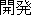 - | - | 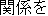 | 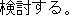 |
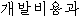 | 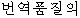 | 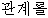 | 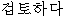 . | |
| development-cost-COM | translation-quality-ADN | relation-ACC | examine-VERB |
As we can see from (1), it iS possible to translate word to word without any consideration of word order. Because of this, Japanese-to-Korean translation is said to be comparatively easy.
Second, the vocabularies of both languages have many words borrowed from Chinese. Around 60% of Korean words are based on Chinese (Sohn, 1999) as are 60% of Japanese words (Shibatani, 1990, ppl42-I43) and it is said that roughly 70% of the Korean Chinese characters (Hanja) are shared with the Japanese Chinese characters (Kanji). Watanabe and Suzuki ( 1981) describe the similarities of the two languages. Similarities arise for the following reasons: sharing many Chinese characters and introduction of Japanese-made Chinese words during the colonized period.
A lot of Japanese-to-Korean translation systems have adopted direct translation methods taking advantage of the similarities. However, there is no explicit measurement showing how much we can translate between similar language groups and no explicit explanation of the correlation between introduced rules and translation results. Many papers mention that case markers and verb-endings are the main problems for Japanese-to-Korean machine translation (Kim and Okoma, 1996). This is a well-expected problem because the stem and ending of inflected words can not be automatically extracted by the method of crossing two dictionaries mediated by English. In order to solve this problem, we may want to use translation tables which includes inflecting words following Kim and Okoma (1996) and Kim et al. (1998). For the present goal, we will set aside this problem, because making a system which is extendible and applicable to other language pairs, is more important than trying to build a perfect system, which may be impossible to make, at least quickly.
Our method is only applicable to language pairs which belong to the same language family. This is a small subset of the world's languages, but we expect that many similar languages are in contiguous areas, and so there will be a demand for translation. Further, there is still a real need for translation of languages that do not have a developed infrastructure: for example, lack of researchers who can understand both source languages and target languages in order to make rules and evaluate the results, insufficient bilingual corpora and so on. Comparing to this situation, all we need for the present goal is a monolingual corpus and a transfer dictionary. As for a transfer dictionary, we can automatically build transfer dictionaries by crossing any other novel language pairs, so long as there is a dictionary mediated by English.
In this section, we will show our method of simpIe and direct Japanese-to-Korean machine translation. So long as we seek for a realistic method, it necessarily requires that we should get the necessary resources with ease. Henceforth, we will use relevant resources which already exist as possible as we can. As for a transfer dictionary, however, if there is no such a dictionary as, for instance, Vogul-to-Burmese or Hungarian-to-Mongolian, we need to build them from scratch. Moreover, if time and money are limited, we have to build them with information and knowledge at hand. It is because that we choose the method to build transfer dictionaries by crossing two English-mediated dictionaries, which are more likely to exist. We will adopt Tanaka and Umemura's method ( 1994) to build a Japanese-to-Korean dictionary. This method is applicable to many other language pairs. Since the detail of building a Korean-to-Japanese transfer dictionary reusing existing resources is shown in Shirai and Yamamoto (2001), we will not go into the details in this paper. Briefly speaking, their Korean-to-Japanese transfer dictionary is automatically created by crossing a Japanese <==> English dictionary with a Korean <==> English one. It is theoretically possible to build any transfer dictionary without the help of bilingual speakers of source and target language, so long as we can use language similarities and knowledge of native language. In Section 3.1, we examine the corresponding machine translation processes, assuming that the Japanese-to-Korean transfer dictionary exists and the source language and the target language are similar.
Most machine translation adopts the following processes. First comes the morphological analysis process. Its major role is to identify the words in the source language text. To do that, it has to find out any possible words out of the expression, while looking up to a word dictionary and then make a graph of the word candidates. Also, there must be statistical information to judge the suitability of whether a word is relevant or not. Using this information, the suitability of the word segmentation can be checked. This method is commonly used nowadays in the machine translation field.
We exploit the fact that the languages are similar, by directly using the transfer dictionary in the morphological analysis, as shown below. The most important advantage of using linguistic similarities is that we can make the analyses of syntax and semantics lighter.
We show an example of this, for sentence (2) in Figure 1 . Words from the best path are boxed. We give a fuller explanation of this example in Section 4.2.
| BOS | ||||||||
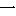 | 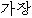 | 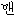 | 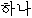 | 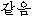 | 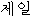 | |||
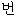 | ||||||||
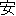 | 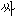 | 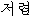 | ||||||
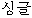 | ||||||||
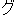 | ||||||||
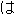 | 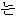 | |||||||
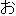 | 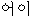 | 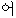 | ||||||
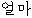 | 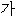 | |||||||
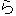 | ||||||||
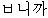 | 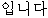 | 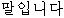 | 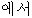 | 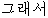 | ||||
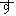 | ||||||||
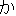 | 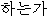 | 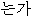 | 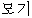 | 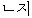 | ? | |||
| EOS | ||||||||
| (2) | 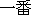 | 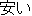 | 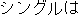 | 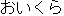 | |
| ichiban | yasui | shinguru-wa | o-ikura | desu-ka | |
| most | cheap | single-TOP | HON-how_much | is-Q | |
| How much is the cheapest single [room]? | |||||
In addition to this, we need at least two more processes for Japanese-to-Korean translation. One is to take verb inflections into consideration, since Japanese verbs and adjectives are heavily inflected. As mentioned before, for high performance we would want to use rules and tables. However, we will focus on how low or high a level we can reach using this simple method and how different it is according to different language pairs. At the moment, we do not add any rules or use tables to solve the inflecting words. The other is target language morphological irregularities, such as the fact that the form of the topic marker differs depending on whether it follows a vowel or consonant.
Let us briefly explain how our system will deal with the inflection problem. Again, we are interested in making a machine translation system which can be extendible to a system involving other languages, not just for Japanese and Korean. Simply, we put as many candidates as possible into the transfer dictionary. Suppose that there is a language X and there are five forms of inflections for a verb aauu: aa, aabb, aabbcc, aabbccdd, aabbccddee. And suppose that its target language has more than ten inflections for its correspondent (Language Y). The following is the sentence that we want to translate.
| *** Sentence : | .. xx aabbcc, | xxxx .... |
| base form : | aauu | kapata |
| inflection : | aab | kkp |
| aabb | kkbb | |
| aabbcc | kkppmm | |
| aabbccdd | kkppnnoo | |
| aabbccddee | kkpadade | |
| kkppammnn | ||
| . | ||
| . |
We do not know which form goes along with a form of the other language. Hence, there are ten possibilities for each verb. For example, language X's aabbcc can be translated as kkp, kkbb, kkppddee, .... Among these combination, kkp,kkppadde, kkppbb can be used as words in language Y. Then, the frequently used words will be translated. Of course, there is a lot of room for improvement, but it is not urgent concern in this paper.
In this section we will describe our method for Japanese-to-Korean translation and discuss the result of our preliminary experiment.
The size of our Japanese-to-Korean transfer dictionary is about 35,000 words. More than one Korean translation match one Japanese word. Also, we use Korean monoIingual corpus which contains 20,000 sentences.
The following example was taken out from ATR Japanese and Korean Travel Conversation Corpus. The corpus is an aligned Japanese-Korean bilingual corpus. We consider the translated Korean sentences as correct translations and compare our translated results to this translation, For instance, the corpus contains the followil1g example:
| (3) | J: | ichiban | yasui | shinguru-wa | oikura | desuka? |
| K: | kajang | ssan | singgeul-eun | eolma | ibnikka? | |
| "How much is the cheapest single room?" | ||||||
For the Japanese input sentence, the system will look up all the possible Korean words for the Japanese word candidates, as described below.
| (1) | find out all possible word candidates, starting from ichi. e.g. Korean translated words such as "il" , "hana", "katteum", "jeil" |
| (2) | find out all possible Korean word candidates for ban and ichiban |
| (3) | then, look up yasu, i, and yasui |
| (4) | for shinguru, since si, sin, shingu are not appropriate candidates in Japanese, start looking up shinguru. |
| (5) | ... |
Look-up process will proceed until no more possible words are found. We obtain the following search results. The pronunciation for each word is in brackets.
| |||||||||||||||||||||
| "" ban (cn) ==> "" beon (cn) | |||||||||||||||||||||
| |||||||||||||||||||||
| i - ==> - | |||||||||||||||||||||
| "" shinguru (cn) ==> "" singgeul | |||||||||||||||||||||
| n - ==> - | |||||||||||||||||||||
| gu - ==> - | |||||||||||||||||||||
| ru - ==> - | |||||||||||||||||||||
| "" wa top ==> "" neun top | |||||||||||||||||||||
| " 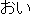 " oi (intj) ==> "" eoi (intj)"" o (intj) ==> "" eo (intj) | |||||||||||||||||||||
| " 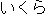 " ikura (cn) ==> "" eolma (cn)"" iku (verb) ==> "" ka (verb) | |||||||||||||||||||||
| ku - ==> - | |||||||||||||||||||||
| ra- ==> - | |||||||||||||||||||||
"" desuka (aux) ==> "" bnikka (aux)
| |||||||||||||||||||||
| su ==> - | |||||||||||||||||||||
"" ka (misc) ==> "" nji (misc) "" ka (misc) ==> "" bnikka (aux) |
We randomly selected 100 sentences from the Japanese-to-Korean Travel Conversation Corpus for evaluation. Then, the process described in Section 4.2 is applied. For example, for the sentence such as ichiban yasui shinguru wa oikura desuka?, meaning how much is the cheapest single room?, we get various Korean sentence candidates as follows:
| (4) | // | / | . | ||
| kajang | jeoryeom/singgeul/neun | eo/eolma | ibnida | haneunga | |
| most | cheap/single/top | intj/how_much | is | Q |
| (5) | // | / | 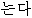 ? | ||
| kajang | jeoryeom/singgeul/neun | eo/eolma | ibnida | neunga | |
| most | cheap/single/top | intj/how_much | is | Q |
| (6) | // | ? | |||
| kajang | jeoryeom/singgeul/neun | eo/eolma | ibnida | mogi | |
| most | cheap/singel/top | intj/how-much | is | mosquito |
We evaluate 100 sentences with five ranking scores in the following.
| Type A | Type B | Type C | Type D | Type E | Total |
| 6 | 32 | 12 | 29 | 21 | 100 |
| 38 | 62 | 100 | |||
We consider the Type A and Type B as the correct translation, which is 38%. However, 13 out of 21 from Type E, which is categorized as "No Entry" are easily improved, if we add the missing nouns to our dictionary. This means that we get 51 sentences out of 100 correctly translated. This is a high result considering the very limited resources used: just a transfer dictionary and a monolingual corpus.
Our result of 5 1 %, is inferior to more sophisticated translation systems, such as Kim and Okoma's (1996), who achieve a 87.5% success rate. This is what we expected. Wo have produced a solid base1ine, the percentage that can be translated with a complete dictionary, but no rules at aIL We can use this baseline to guide us in deciding which problem we should deal with next. One result is that we should have a better transfer dictionary. If we have a dictionary covers all the unregistered words, then the result is sure to get better.
In addition, we found out the problem of case markers, such as Korean subject markers, ga, i, object markers eul, leul, and topic markers eun, neun. Consider example (7).
| (7) | - | |
| singgeul-eun/neun | eolma | |
| single-TOP | how-much |
In single and top for the noun like shinggeul, which ends with a consonant, l. The usage of the above case markers depend on the pronunciation of the last syllable. If it ends with a consonant, the maker will be i, eul, eun, while it ends with a vowel, the maker will be ga, leul, neun. This problem can be easily solved employing a relevant rule. But, this can be also solved using a corpus. It is because there will not be a sentence using a wrong case marker for a noun for most of the time. And, it will be decided by the frequency of the usage, it should not cause any problem. We will examine how far the problem of case markers can be solved with a corpus. Also, verb-endings are a big problem as we expected. We will examine how much we can solve this problem using a corpus, too.
Of course, we expect many other difficult problems such as anaphora resolution, mismatcb of numeral classifiers, and so on. For example, (8) shows an example of numeral classifiers. Japanese numeral classifier -hon, pon is polysemous in the sense that it can count such nouns as fax, email, phonecall, hair, banana, can, bottle and so forth.
| (8) | J | Tokyo-kara | Fakkusu-ga | ip-pon | kita. |
| K | Tokyo-eso | Faeksu-ga | il/han-??? | wassta. | |
| Tokyo-from | Fax-nom | one-CL | came | ||
| A fax came from Tokyo. | |||||
However, these nouns are counted with different numeral classifiers in Korean. For example, -keon for fax, email, phonecall 2, -karak for hair and noodle, -kae for banana, can, etc. We think that this problem can be also solved with using the corpus-method to some extent. However, when i-ppon is used anaphorically, there will be no principled way to choose a right translation without knowing the referent. This will be hard to resolve with our simple method. However, there are no machine translation systems which solve this problem at this stage.
This paper examines how far it is possible to do Japanese-to-Korean machine translation with none or minimal transfer rules. In addition, our goal is to show the translation result explicitly using the similarities of two languages. Conventional approaches to machine translation have taken it granted that parsing, transfer, and generation rules or bilingual parallel corpora should be involved in machine translation system. We admit that machine translation system with detailed rules and extricate structure surpass the simple direct translation system in translation quaiity. However, our present starting-off goal is different. The proposed method of machine translation exploits the linguistic similarities to achieve acceptable translation with low cost. If we can show how little knowledge can be used for automatic translation between similar languages, with only a transfer lexicon and a target language corpus, then it will be easy for researchers to proceed for the better quality of the
translation. This is particularly important for translating between language pairs that do not include English. While there are vast amounts of linguistic data available for English, including tagged and parsed corpora, this is not the case for most of the world's languages. It is also hard to find bilingual human resources for most language pairs. Our method requires only a bilingual transfer dictionary and a target language corpus. The dictionary itself is automatically created by crossing a X <==> English dictionary with a Y <==> English one. Such a simple approach is only possible because Japanese and Korean are both linguistically similar and have similar lexicons. In the future, we plan to extend our system to other similar languages, such as Turkish, Uzbek, Mongolian and Hungarian.